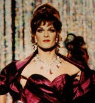

Contents | Features | Reviews | Books | Archives | Store |
 |
|
| Movie Credits | Buy It! |
To Wong Foo,
Thanks for Everything!
Julie Newmar
Review by Carrie Gorringe
 |
Directed by Beeban Kidron. Starring Patrick Swayze, |
If you want to know about the inspiration behind the new film, To Wong Foo, Thanks for Everything! Julie Newmar, just tune in to the "Fx" television channel every night when it shows the 60s series Batman and look for an episode involving Catwoman. Yes, that's Julie Newmar. Whether as Catwoman or in films like The Marriage Go-Round (1959) in which she played a presumed homewrecker, Newmar often portrayed characters whose sensuality bordered on parody (picture a diluted version of Eartha Kitt, and you get the general idea).
Unfortunately, To Wong Foo wants very much, like its namesake, to be statuesque (the film's favorite expression), but ends up teetering precariously, like its protagonists, on stiletto heels. It's the story of two drag queens, Miss Vida (Swayze) and Miss Noxzeema (Snipes), who win first prize in a drag queen contest -- a pair of plane tickets to California to compete in the national championships. Vida decides to cash in their tickets and buy a 1970s Cadillac which has seen better days, in order to take along one of the contest's losers, Miss Chi-Chi (Leguizamo), for whom she feels sorry. In the process of taking their act on the road, the threesome metaphorically take it on the road against all forms of ignorance, including homophobia and wife-beating, not to mention a lack of decorating and fashion sense. After several adventures (including a hilarious, if somewhat implausible, encounter with a sheriff who is presumably representative of the intolerance of the American midwest), the inevitable vehicular breakdown leaves them stranded in Snydersville, a midwestern hamlet which is so deserted and economically depressed that it qualifies only as a half-horse town (trust me; this town couldn't afford an entire horse). But no sooner have they cleaned up the town -- or at least given it a badly-needed infusion of camp and personal liberation -- than the mean ol' sheriff comes back to run 'em out of town. Since this hamlet ain't big enough for the four of 'em, one of 'em's got to go...
All of this by itself should have been sufficient to produce a fairly solid comedic premise, if someone connected with the film had only bothered to consider the comic potential of replacing the traditional strong, silent Western hero with three voluble yet self-aware gay men with their tongues firmly in cheek about themselves and their life in drag. No such luck. One of the central problems with To Wong Foo (the title comes from the inscription on a photograph swiped from a restaurant by Vida and used like a talisman throughout the journey) is its confusion of genres. To put it more plainly, the film doesn't really know what it wants to be, because the script borrows implicitly from too many sources and uses them ineptly. It starts out like a backstage musical with behind-the-scenes footage of Swayze, Snipes and Leguziamo creating the illusion of womanhood. Then the film becomes a combination of documentary and musical (shades of Barry Shills' Wigstock, perhaps?). It then borrows elements of "road" movies and then from westerns, only to conclude with yet another musical number. These disparate elements are gathered together under circumstances that are not necessarily implausible in themselves, but become unconvincing in their execution; we are supposed to believe that Swayze, Snipes and Leguizamo look so much like "real" women that they can travel across a potentially hostile landscape with impunity and without immediate visual detection (of course, they are detected, but since the detectee is an abused wife --played winningly by Stockard Channing -- the film seems to suggest that only victims recognize each other). One could also persuasively argue that the film promotes stereotypes about so-called "typical" gay lifestyles, and in the process unfairly denigrates the liberating potential of drag as a satirical swipe at heterosexual society and its value systems (both in the treatment of women and how heterosexual society ascribes effeminate behavior to gay men). Furthermore -- and most unforgivably -- the film undermines its own satirical edge by trying to take itself far too seriously; someone obviously couldn't resist the urge to insert overt messages of tolerance. Such maudlin behavior is tiresome, since skillfully-crafted satire could have achieved the same result in a much more entertaining fashion. Only the solid performances of Swayze, Snipes and Leguizamo lift this film above the mediocre because the actors don't merely sympathize with the concept of being gay and in drag in a hostile world: they achieve a state of empathy. Too bad the film's a drag -- on the actors and on itself.
Contents | Features | Reviews | Books | Archives | Store
Copyright © 1999 by Nitrate Productions, Inc. All Rights Reserved.